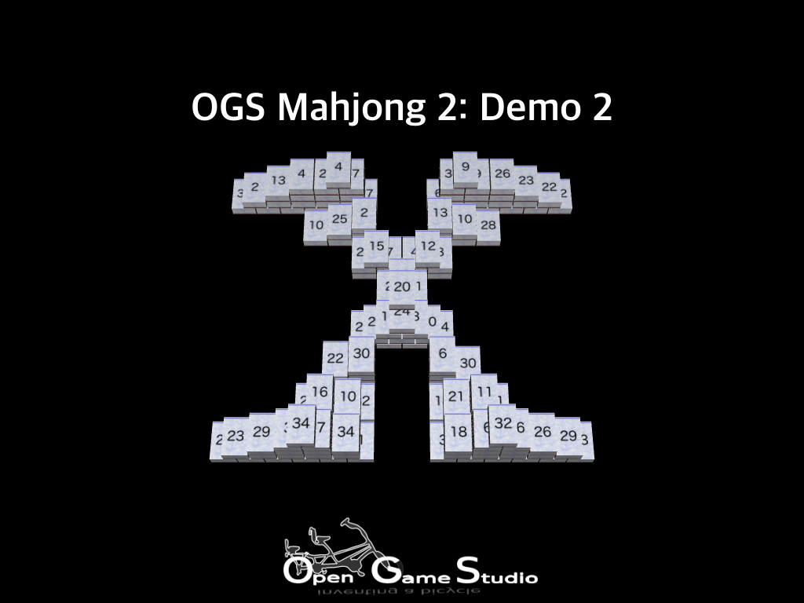
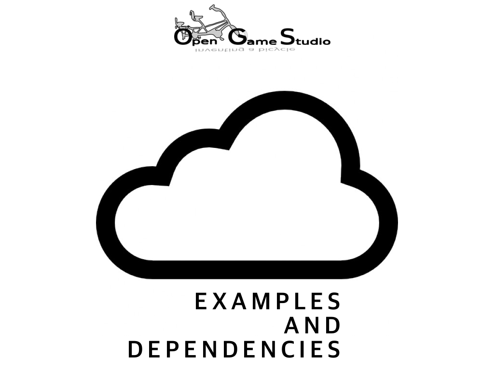
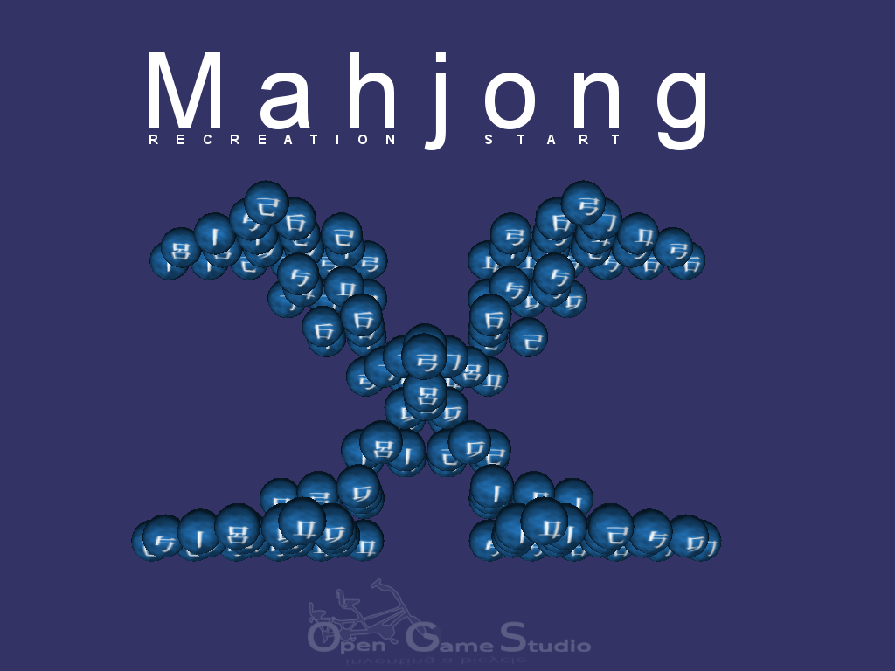

2018-10-02 00:00

Мы рады сообщить о выпуске второй демонстрации OGS Mahjong 2. Её целью были улучшение техники разработки и создание надёжной основы кроссплатформенной разработки.. . .
2018-08-21 00:00

Эта статья описывает два новых кросс-платформенных примера OpenSceneGraph и изменение в работе с зависимостями.
Примеры клиента HTTP и выбора узла сцены
После окончания работы над примером удалённой отладки и сообщения об этом мы с удивлением обнаружили, что безопасное соединение HTTPS между отлаживаемым приложением и брокером отладки работало лишь в веб-версии примера. Десктопная и мобильная версии работали лишь с помощью обычного соединения HTTP.. . .
2018-06-27 00:00

Эта статья описывает то, как создание третьего кросс-платформенного примера OpenSceneGraph привело нас к разработке через создание примеров.
ИЗМЕНЕНИЯ ОТ 2018-08: третий пример был переименован в четвёртый в связи с причинами, изложенными в следующей статье.. . .
2018-04-20 00:00

Эта статья резюмирует создание первых двух кросс-платформенных примеров OpenSceneGraph.
К тому времени, как мы выпустили первую техническую демонстрацию OGS Mahjong 2, нас уже дожидался запрос на описание работы с изображениями в OpenSceneGraph на Android. Сначала мы рассматривали возможность создания нового самоучителя для кросс-платформенного руководства OpenSceneGraph, но позже мы оценили необходимые трудозатраты и посчитали их излишними для освещения такой небольшой темы (по сравнению с тем, что умеет средняя игра) как загрузка изображений. Мы решили продолжить делиться нашими знаниями в виде конкретных примеров. Так на свет появились кросс-платформенные примеры OpenSceneGraph.. . .
2018-02-16 00:00

Мы ради сообщить о выпуске первой технической демонастрации OGS Mahjong 2. Её цель была в проверке игровой механики на всех поддерживаемых платформах.
Проверьте технодемку на своей платформе:. . .
2018-01-26 00:00

Эта статья описывает начало воссоздания игры Маджонг.
План
Мы начали воссоздание Маджонга с составления краткого плана реализации игровой механики с минимальной графикой:. . .
2017-12-31 22:00
Итак, 2017й год стремительно приближается к финалу, итоги года уже подведены, так что в свободное от расчехления фейерверков и подготовки систем залпового огня шампанским время мы обозначим свою цель в следующем году.. . .
2017-11-22 00:00

Настало время сделать ревизию наших достижений в 2017 году и проверить, насколько они следуют основной цели проекта Opensource Game Studio.
Краткая история. . .
2017-10-16 00:00
Мы используем Wordpress в качестве движка нашего сайта уже более семи лет. И теперь пришло время двигаться вперед. Или назад. Некоторое время мы следили за разработкой нового поколения движков - генераторов статических сайтов. Похоже, что это технология, способная превратить прошлое в будущее.. . .
Страница 2 из 7